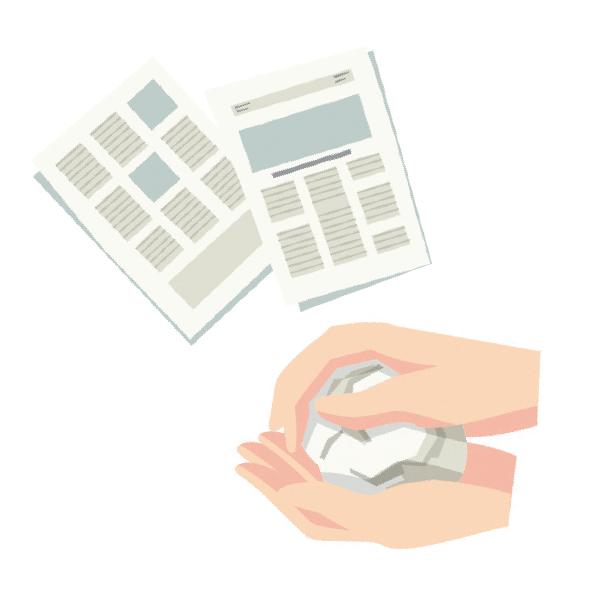
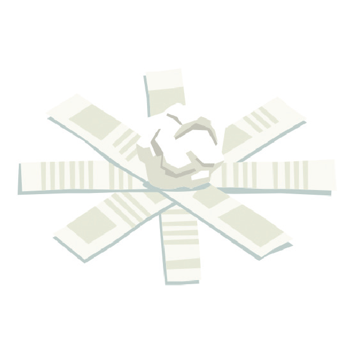
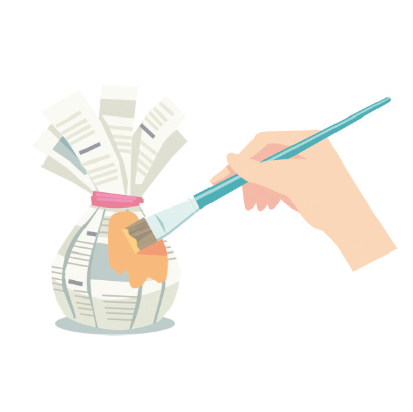
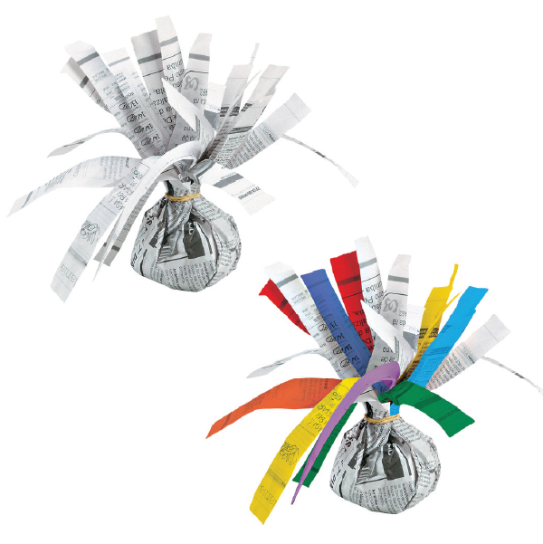

Amasse uma das folhas de jornal e faça, com ela, uma bolinha de papel.
Recorte em tiras a outra folha de jornal e depois, envolva a bolinha, deixando uma sobra de papel para prender.
Recorte um pedaço de barbante e passe entre a bolinha e as abas que você deixou.
Se preferir, pinte sua peteca como desejar.
Assim você terá uma peteca.
